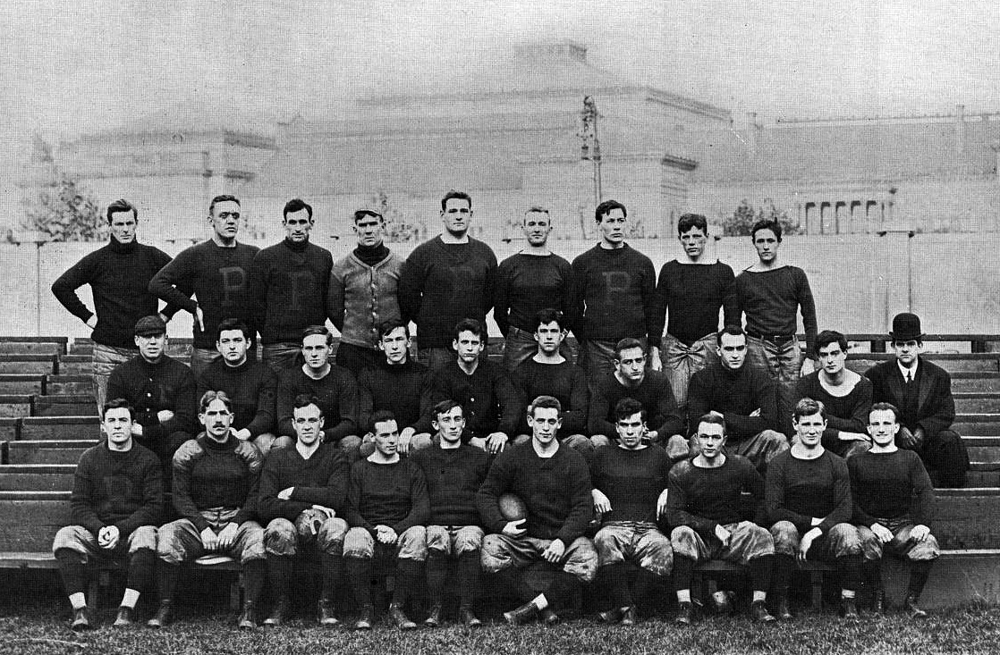

Le Origini del Football Americano
Il football americano nasce nella seconda metà del XIX secolo, evolvendosi dal rugby e dal calcio. La prima partita ufficiale si svolse nel 1869 tra le università di Rutgers e Princeton.
La Fondazione della NFL
Nel 1920 nasce la National Football League (NFL), che ha contribuito alla popolarità globale dello sport grazie a campionati sempre più spettacolari.